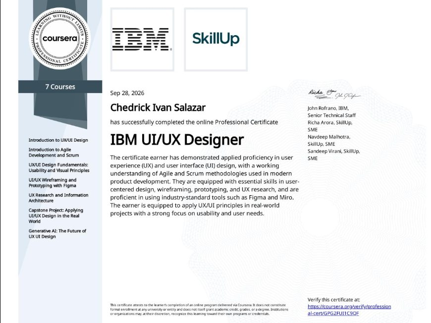
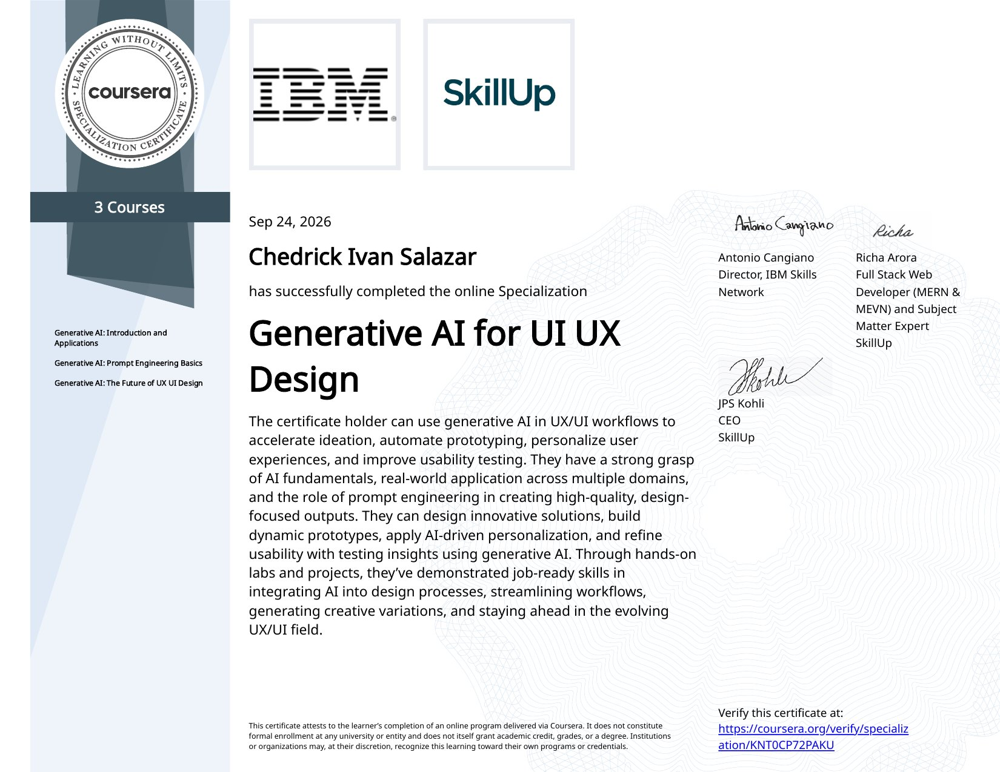

End-to-End User Experience Design, Intuitive User Flows & Interface Design, Wireframing & Prototyping, Usability Testing
Figma
UI/UX Designer creating intuitive digital experiences that balance user needs, business goals, and thoughtful visual design.
chedrickivansalazar@gmail.comMy tech stack

Wireframing and PrototypingI bridge the gap between user needs and thoughtful UI/UX design. As a Bachelor of Science in Information Systems graduate from the University of Batangas, my background combines technology, problem-solving, and design thinking, giving me a practical perspective on creating intuitive digital experiences.
I focus on transforming ideas and user requirements into clear, engaging, and meaningful experiences. Through user research, user flows, wireframing, prototyping, and visual interface design, I turn complex requirements into simple and intuitive solutions that put the user at the center of the experience.
I believe great design starts with understanding the people who use it. I value empathy, attention to detail, continuous learning, teamwork, and effective communication throughout the design process. I’m always eager to solve meaningful design challenges and create digital experiences that are useful, accessible, and enjoyable to use.
User Interface Design, User Experience Design, Design Systems, Wireframing & Prototyping, User Flow Design, Usability Testing
End-to-End User Experience Design, Intuitive User Flows & Interface Design, Wireframing & Prototyping, Usability Testing
User Flow Mapping, Information Architecture, Process Mapping, System Diagrams & User Journey Visualization
Basic Web Structure, Semantic HTML, CSS Styling, Layout Design & Visual Interface Implementation
Website Design, Page Layout Creation, Content Management, Theme Customization & User-Friendly Web Experiences
AI-Assisted UI Design, Wireframing, Rapid Prototyping, Screen Generation & User Flow Visualization
Visual Design, Social Media Graphics, Presentation Design, Marketing Materials & Creative Content
I craft intuitive digital experiences focused on user needs, clear interactions, and purposeful visual design. The result: interfaces that are easy to understand, engaging to use, and consistent across the experience.
Research-driven interfaces designed around real user needs and behaviors.
Clear navigation and interactions that make complex experiences easier to understand.
High-fidelity interfaces and interactive prototypes that clearly communicate the intended experience.
I start by understanding the people and the problem: who the users are, what they need, and what the business wants to achieve. From there I map user flows and sketch wireframes before moving into high-fidelity design.
Usability comes first. A layout has to be clear and easy to use, then visual design reinforces it with hierarchy, consistency, and a polished look that supports the content instead of competing with it.
Yes. I’m open to full-time roles as well as freelance and project-based work. Send me an email with a short overview and I’ll get back to you.
Websites, web apps, and management systems where I can turn complex requirements into simple, intuitive flows, from early research and wireframes through to interactive prototypes.
Interested in bringing me onto your team or discussing an open position? Let’s connect directly via Email to discuss how I can add value to your company.
chedrickivansalazar@gmail.com
Earned the Google UX Design Professional Certificate (comprising 8 courses) from Google on Coursera.
Covered the end-to-end UX design process: user research, wireframing, high-fidelity prototyping in Figma, and usability testing.

